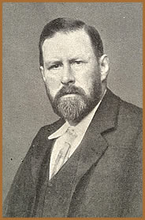
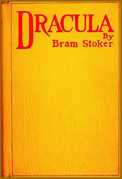

Abraham Stoker nasceu no dia 8 de
novembro de 1847, em Clontarf, Dublin, Irlanda. Terceiro filho
de um total de sete irmãos, sofreu nos primeiros anos de
sua vida com uma saúde frágil que o impedia de até
mesmo de se locomover. Neste período, o infante Bram Stoker
passava seu tempo ouvindo histórias de sua mãe e
lendo compulsivamente livros e contos de terror sobrenatural.
Certamente, esta fase contribuiu muito para o seu desenvolvido
criativo.
Com
15 anos de idade ingressa no tradicional Trinity College de sua
cidade natal e, mesmo com a saúde vulnerável, dedica-se
com êxito às atividades esportivas. Imerso no ambiente
acadêmico e intelectual, o jovem Stoker passou a integrar
a chamada Sociedade Filosófica; onde teve a oportunidade
de produzir um ensaio intitulado Sensationalism in Fiction
and Society. Posteriormente, ainda viria a ocupar a função
de auditor da Sociedade Histórica e presidir a Sociedade
Filosófica.
No ano de 1866, Stoker, assim como
seu pai, passa a trabalhar no funcionalismo público no
castelo de Dublin. Forma-se em matemática em 1870, mas,
mesmo graduado, dá continuidade aos estudos diariamente
por meio período. O interesse de Stoker pelo teatro levou-o
a oferecer-se voluntariamente (e sem remuneração)
como crítico do jornal Dublin Evening Mail. Suas
críticas inteligentes e embasadas elevaram seu nome junto
aos meios sociais, artísticos e intelectuais da cidade.
Assim, passa a conviver com personalidades influentes chegando
até mesmo a conhecer Oscar
Wilde, Arthur Conan Doyle e William Butler Yeats.
No ano de 1873, é convidado
a assumir a editoração do jornal Irish Echo
(que mais tarde seria rebatizado como Halpenny Press),
trabalhando sem remuneração salarial e por meio
período. Entretanto, o impresso não obteve o sucesso
esperado e Stoker abandonou a atividade no ano seguinte.
A partir deste momento, passa a
produzir seus primeiros contos e peças ficcionais que eram
publicados em jornais da cidade. The Chain of Destiny
foi seu primeiro trabalho na linha do terror sobrenatural, publicado
em 1875 no periódico Shamrock.
No ano seguinte, o autor inglês
Henry Irving assume a direção do Royal Lyceum
Theatre, de Londres, e convida Stoker para ocupar a função
de gerente. Neste mesmo período, Stoker casa-se com a atriz
Florence Balcombe, uma das mais belas mulheres Dublin. Um fato
interessante é que Florence havia sido prometida como esposa
à Oscar Wilde; entretanto, optou pelo casamento com Stoker
devido seu emprego e estabilidade junto ao governo.
Os primeiros anos em Londres foram
bastante intensos e produtivos. Em 1879 publica The Duties
of Clerks of Petty Sessions in Ireland; no mesmo ano nasce
Noel, único filho do casal. Under the Sunset,
uma coletânea de contos infantis, foi publicada em 1882.
Neste momento, inicia-se a fase mais criativa e próspera
da vida de Bram Stoker.
Seu cargo no Lyceum Theatre o colocava
em contato com o núcleo intelectual londrino. Assim, no
final desta década, publicou seu primeiro romance: The
People (1889). Nos anos seguintes, são publicados
O Castelo da Serpente, The Watter’s Mou
e Croken Sands e The Shoulder of Shasta.
Em maio de 1897, publica a obra
que incluiria seu nome definitivamente na literatura mundial:
Dracula. O romance epistolar, permeado pelo horror tétrico
e sobrenatural, aborda a trajetória do diabólico
Conde Drácula, da Transilvânia à Inglaterra;
pautado ainda por personagens célebres como Jonathan Harker
e Abraham Van Helsing.
A
publicação de Drácula encontrou uma boa receptividade
em alguns críticos que o consideraram uma rara combinação
de um tema lúgubre com uma trama bem construída.
Por outro lado, gerou opiniões contrárias em relação
à abordagem e à temática tétrica.
Na ocasião do lançamento, Stoker promoveu uma leitura
do texto no Lyceum durante quatro horas. Entretanto, da mesma
forma que o livro, as condições e referências
usadas como base para sua composição, despertam
interesse e suposições por parte de críticos,
estudiosos e leitores.
A inspiração para
o enredo pode ter sido extraída de um sonho do autor no
qual um vampiro emergia do túmulo. A obra Carmilla
(Sheridan Le Fanu – 1872) e The Vampyre (Polidori
– 1819) possivelmente influenciaram a temática e
o aspecto literário. Da mesma forma, o interesse de Stoker
pela biografia de Vlad Tepes contribuiu na elaboração
do personagem principal. Ainda, a personalidade autoritária
de Henry Irving pode se refletir nas características do
próprio Conde Drácula. Enquanto que o comportamento
dominante de Florence sobre Stoker pode ter ser sido referenciada
inversamente na dominação de Drácula sobre
o sexo feminino.
Nos anos seguintes, Stoker deu
continuidade as suas atividades literárias em ainda foram
publicados Miss Betty (1898), Os sete dedos da morte
(1903) e The Man (1904), entre outras que não
obtiveram o mesmo sucesso de Dracula.
Sua carreira e vida pessoal entram
em decadência. O Lyceum e seu acervo de adereços
cênicos são destruídos por um incêndio.
Em seguida, o teatro, em condições precárias
é transferido ao um sindicato; no entanto, encerra definitivamente
suas atividades em 1902. Henry Irving falece em 1905. No mesmo
ano, Stoker sofre um derrame cerebral e contrai a doença
de Bright que afeta o funcionamento dos rins.
A saúde de Stoker se deteriora
gradativamente. Ainda sim, em 1906, publica, em homenagem ao amigo
e sócio, Personal Reminiscences of Henry Irving.
Após três anos, é publicado O Caixão
da Mulher-Vampiro e em 1911 seu último romance intitulado
O Monstro Branco.
Em 20 de abril de 1912, em Londres,
Abraham Stoker, autor de uma das maiores obras da literatura mundial,
falece em sua casa na companhia de Florence. Após a morte
do autor, Florence Stoker, que morreria apenas em 1937, herdou
os direitos de publicação de Drácula e cedeu
permissão para que o teatrólogo Hamilton Deane adaptar
o romance à peça teatral. Esta foi a primeira adaptação
que a obra recebeu e contribuiu muito para sua popularização.
Em 1922, Nosferatu, filme baseado no romance de Stoker,
estreou nas telas do cinema sob direção do alemão
Murnau.
A biografia de Stoker poderia ter
sido suplantada pela história, pelo tempo e talento de
tantos célebres autores. No entanto, o velho e demoníaco
conde da Transilvânia aterrorizou o mundo nas palavras de
Stoker, na figura de atores do cinema e na concepção
de diretores teatrais, sublimando seu criador ao patamar de celebridade
literária do século XX.
Se a biografia de Stoker é
opaca frente à popularidade de seu Conde, é certo
que a memória do próprio autor ainda vive na figura
de Drácula, e o espectro de ambos se eterniza no inconsciente
de cada um de nós, e revive pelo temor e pelo terror sempre
que seu nome é pronunciado.
Por Spectrum
Obra
Disponível: